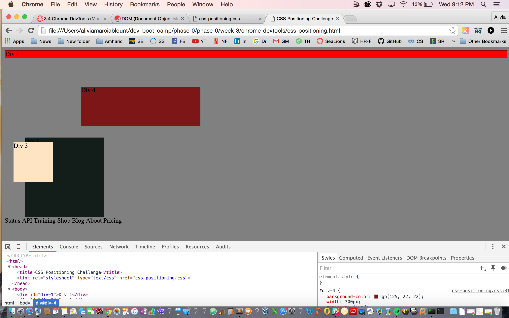
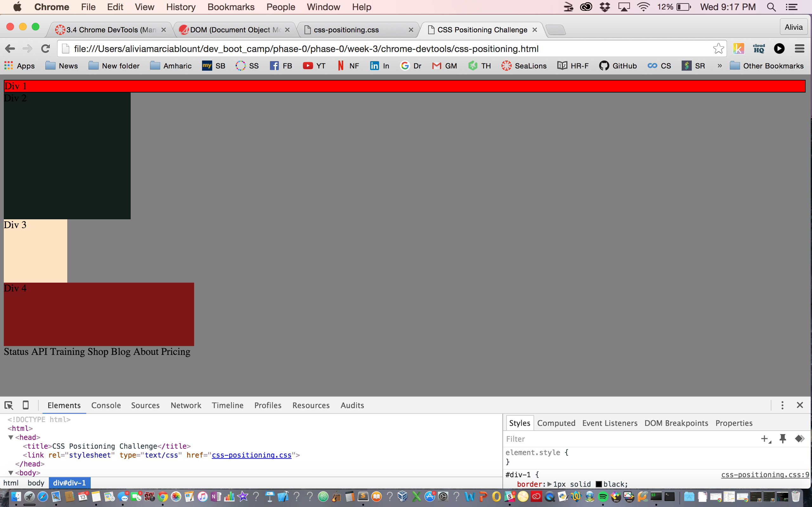
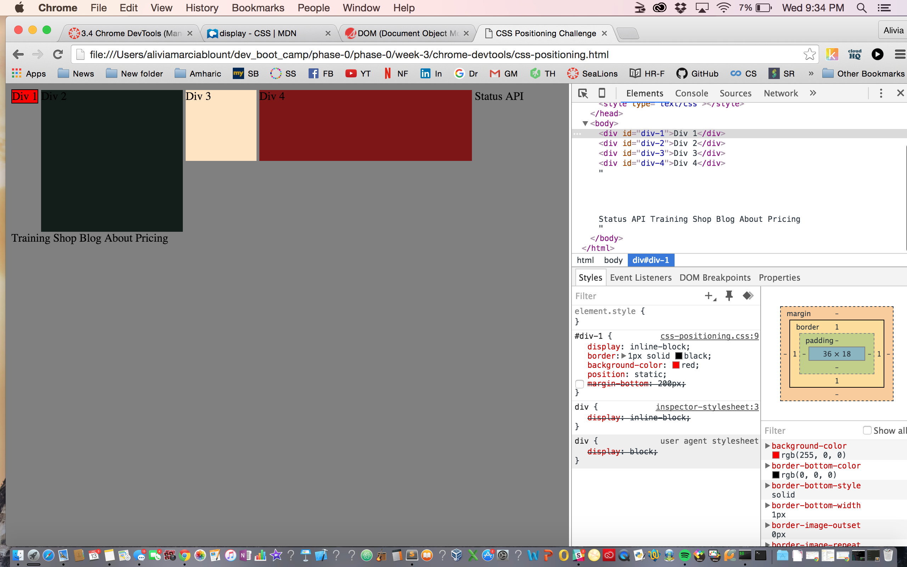
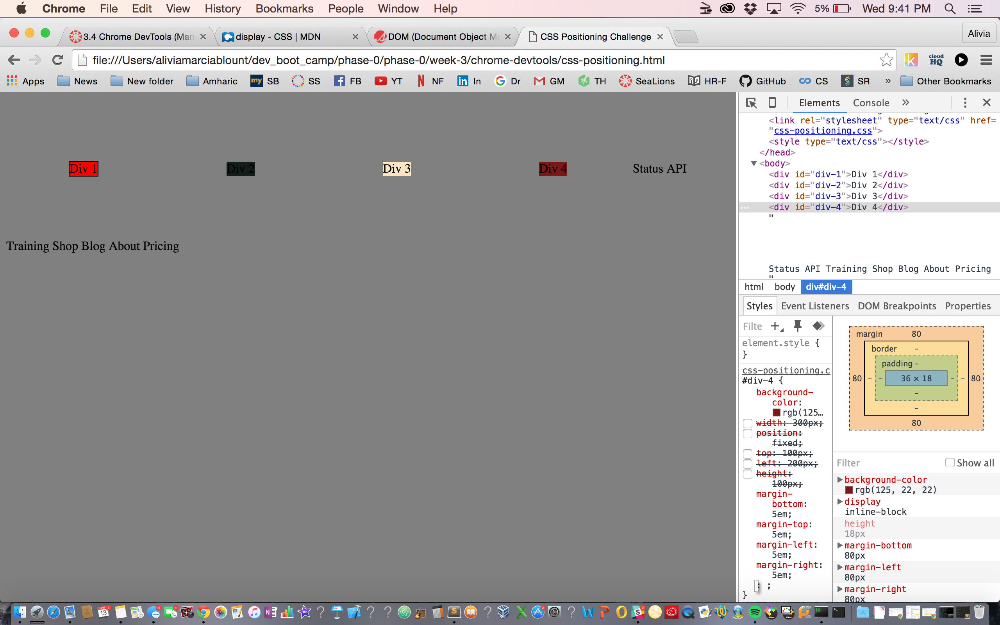
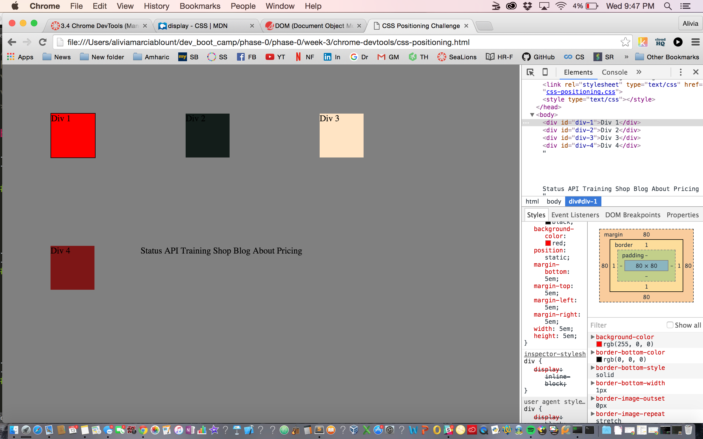
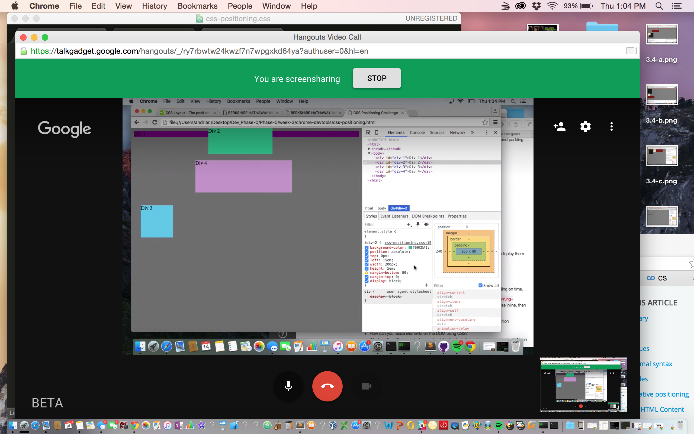
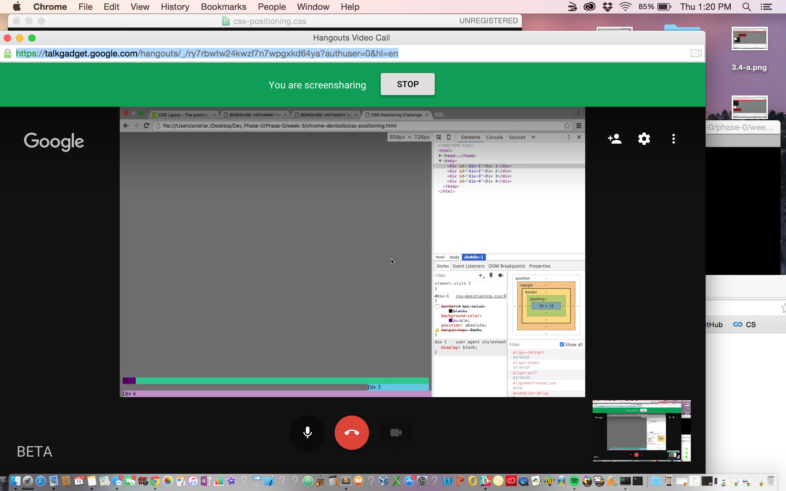
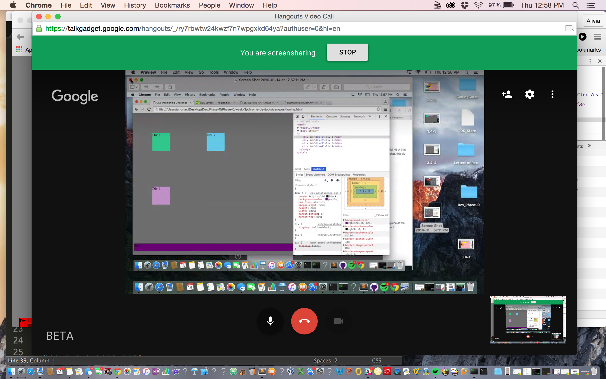
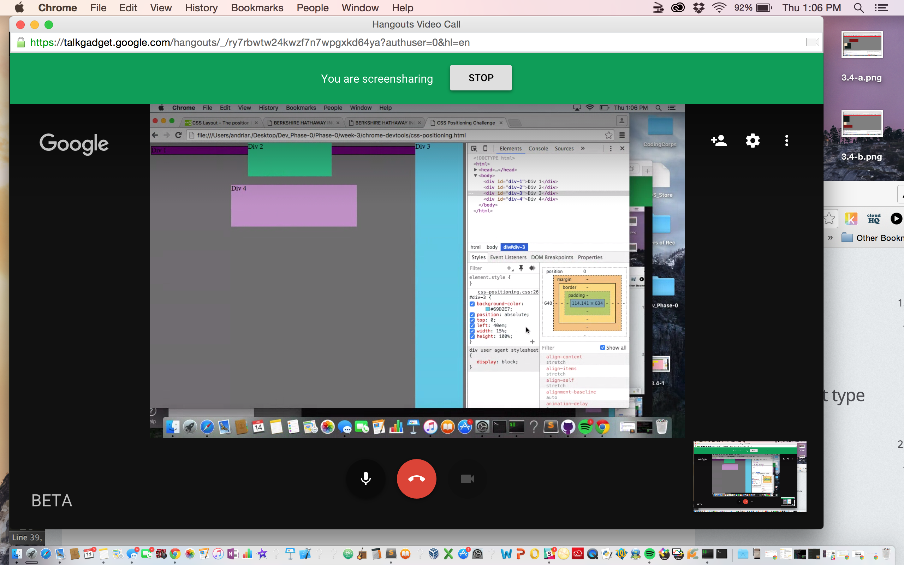

#3.4 Positioning Reflection











How can you use Chrome's DevTools inspector to help you format or position elements?
Play around with what you see online until you get what you want.

How can you resize elements on the DOM using CSS?
You can play with the margin sizes the height and the width.

What are the differences between absolute, fixed, static, and relative positioning? Which did you find easiest to use? Which was most difficult?

Static was easiest to use because it prevent the image from moving. Absolute was the default preference if I remember correctly. I did spend a lot of time playing around with all of the positioning elements until the screen looked something like I would prefer.

What are the differences between margin, border, and padding?
Margin is how close of far the image is from the edge of the screen. Border refers to the surrounding lining of the image, so you can make it thin or thick or none. Padding is the inner most layer of space between the image and the border.

What was your impression of this challenge overall? (love, hate, and why?)
I am interested in learning more about chrome dev-tools becaue many have mentioned that it is helpful to know, but I don't feel like I learned much from this challenge because I can't remember the steps that I took to get things working.
